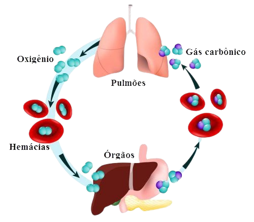

Troca Gasosa (Hematose)
O processo vital que oxigena seu corpo:
- 🔵 Entrada: O oxigênio atravessa a membrana e entra no sangue.
- 🔴 Saída: O CO₂ sai do sangue para ser expelido.
- 🟢 Equilíbrio: Garante energia para todas as suas células.

Por que o cuidado é maior?
-
👶
Crianças:
Respiram mais rápido e o sistema respiratório ainda está em desenvolvimento.
-
👴
Idosos:
Possuem uma reserva funcional menor e maior propensão a inflamações.
-
🏃♂️
Atletas:
A ventilação aumentada no esforço faz com que mais poluentes entrem nos pulmões.